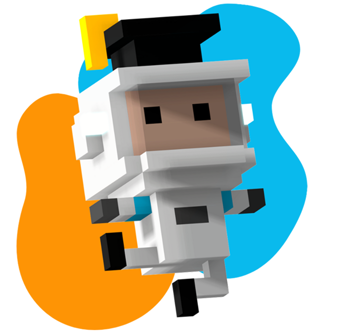

Plan de Estudios
CIENCIAS DE LA COMPUTACIÓN
La presente propuesta tiene como finalidad incorporar de manera progresiva y transversal la enseñanza de la programación y el pensamiento computacional en el sistema educativo formal, desde el nivel inicial hasta el último año del nivel secundario.
Presentación del proyecto
- check_circle La alfabetización digital temprana, como derecho y necesidad en contextos de transformación tecnológica.
- check_circle La inclusión de pensamiento computacional como medio para desarrollar el razonamiento lógico.
- check_circle La formación docente continua y situada, entendiendo que la capacitación es clave.

Objetivos Generales
Acompañar a las instituciones educativas en la integración curricular de la programación y el pensamiento computacional.
integration_instructions
Integrar Programación e IA
Como parte del currículum escolar respetando gradualidad y profundidad.
school
Capacitar Docentes
Para impartir contenidos tecnológicos con autonomía mediante formación continua.
admin_panel_settings
Ciudadanía Digital
Promover el uso crítico, activo y responsable de la tecnología y entornos virtuales.
Explorador Curricular
Descubre los contenidos estructurados por nivel educativo.